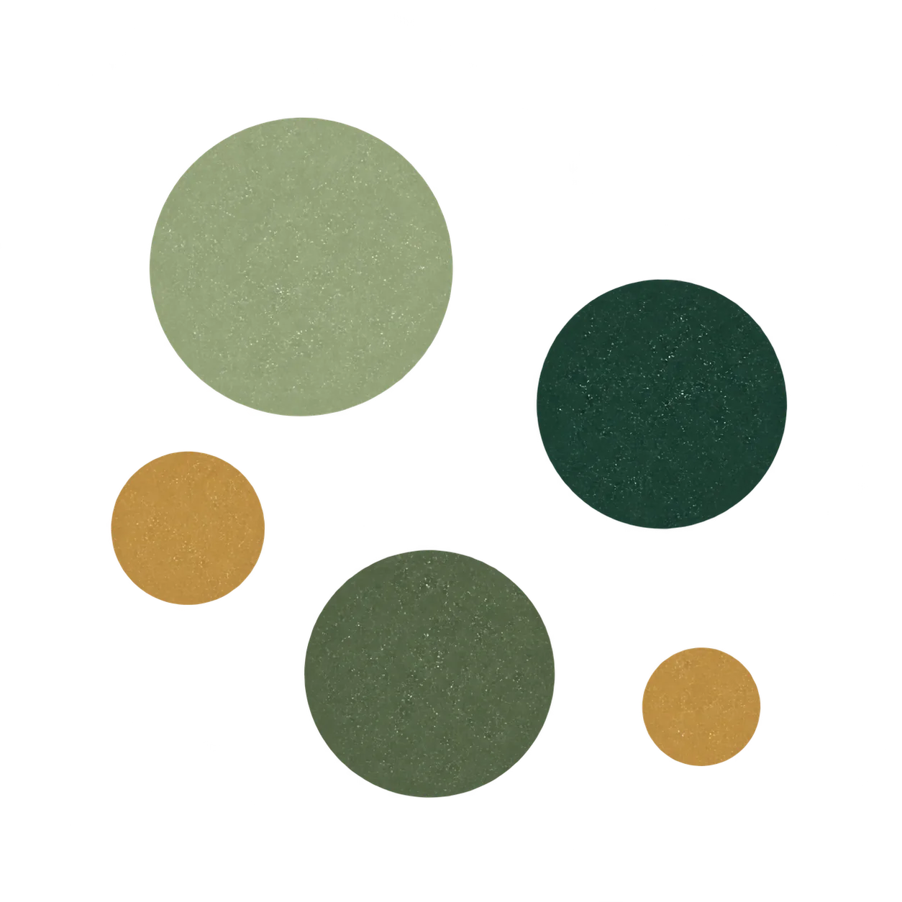
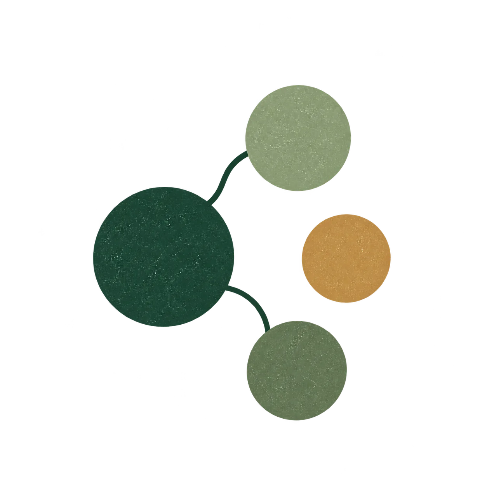
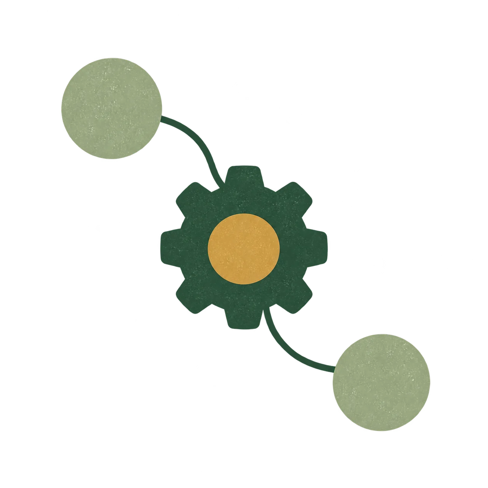

Sales passes an order to production. A missing detail sends it back, delaying the job and drawing several people into the follow-up.
ServicesOperations support & process improvement
Operations consulting
& implementation.
Operations consulting for manufacturers and small to midsize businesses. I help with orders, production handoffs, reporting and procedures, through project work or regular part-time support.

When this helps
The same problem
keeps coming back.
Orders arrive incomplete. Questions get sent back to the owner. Reports take days to assemble. A key procedure depends on one person remembering every step.
I work with you and your team to find where things get held up, decide what to change and put it into practice.
Discuss an operations projectWork can include
- Map the steps in a process and investigate delays
- Improve order and project handoffs
- Organise purchasing and inventory records
- Build reports and project trackers
- Write procedures and train the team
- Document who handles each task and decision
From understanding to use
Investigate before
recommending a change.
We start with who’s affected, what happens and whether a change is needed. Then we check delays, rework and lost capacity. A simpler process or better use of existing software may be enough.

See the work clearly.
Look at what actually happens: the requests, workarounds, delays, and questions that keep returning.
Recorded examples of the problem.

Understand what it costs.
Look at time lost, rework, risks and limits on capacity. Check who carries the extra effort and how it affects the rest of the business.
An estimate of the time, rework or capacity affected.

Choose what to change first.
Separate a missing decision from unclear ownership, poor information, or an awkward process. Choose a change that addresses the cause and fits the team.
A recommended change and why.

Put the fix to work.
When implementation is in scope, put the change into use with the team. Agree on who is responsible, how it should be used and how we’ll check it against the starting point.
A tested procedure, report or tool, with instructions.
Putting changes into practice
Testing, training
and handover.
I help your team test and use a new handoff, procedure, report or tool.
A project can start here when the problem is clear. A focused review ends with findings and recommendations; any implementation is agreed separately.
Where repeated tasks are ready for a tool, workflow automation and practical AI can support the process. Ongoing operations support is available to help carry improvements forward.
Plan for daily use
- Testing with the people who will use the change
- Clear ownership and responsibilities
- Practical training and documentation
- Handover and any agreed follow-up
An example of the approach
When an order keeps
coming back for clarification.
Illustrative example of a possible engagement. The scope and result would depend on the business. Read about the career experience behind my approach.
Which details are repeatedly missing, who has the information, how long the work waits, and who can accept an order as ready.
A short set of required fields, a clear acceptance step, a named owner, and a weekly check of returned orders.
Let’s talk
What would you
like help with?
Describe the process, product or project. We’ll discuss whether I can help.